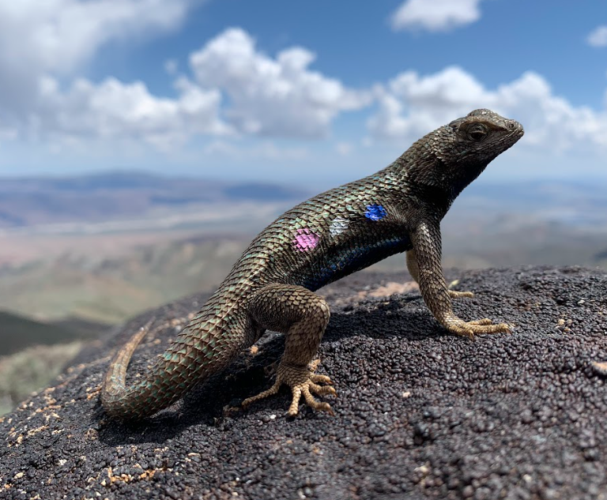
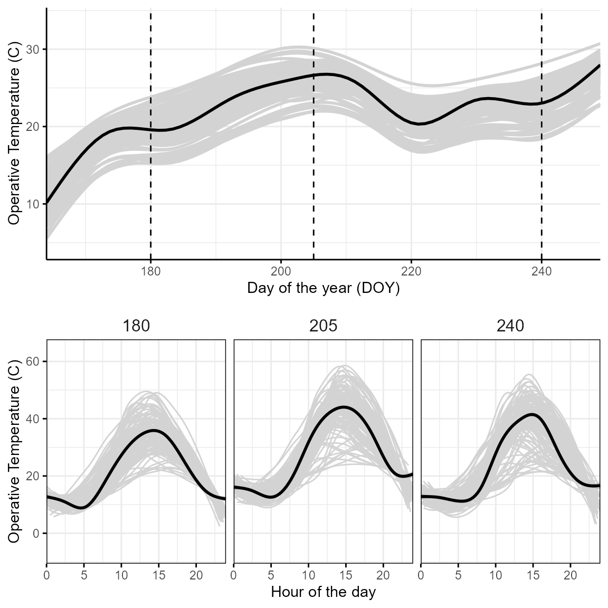
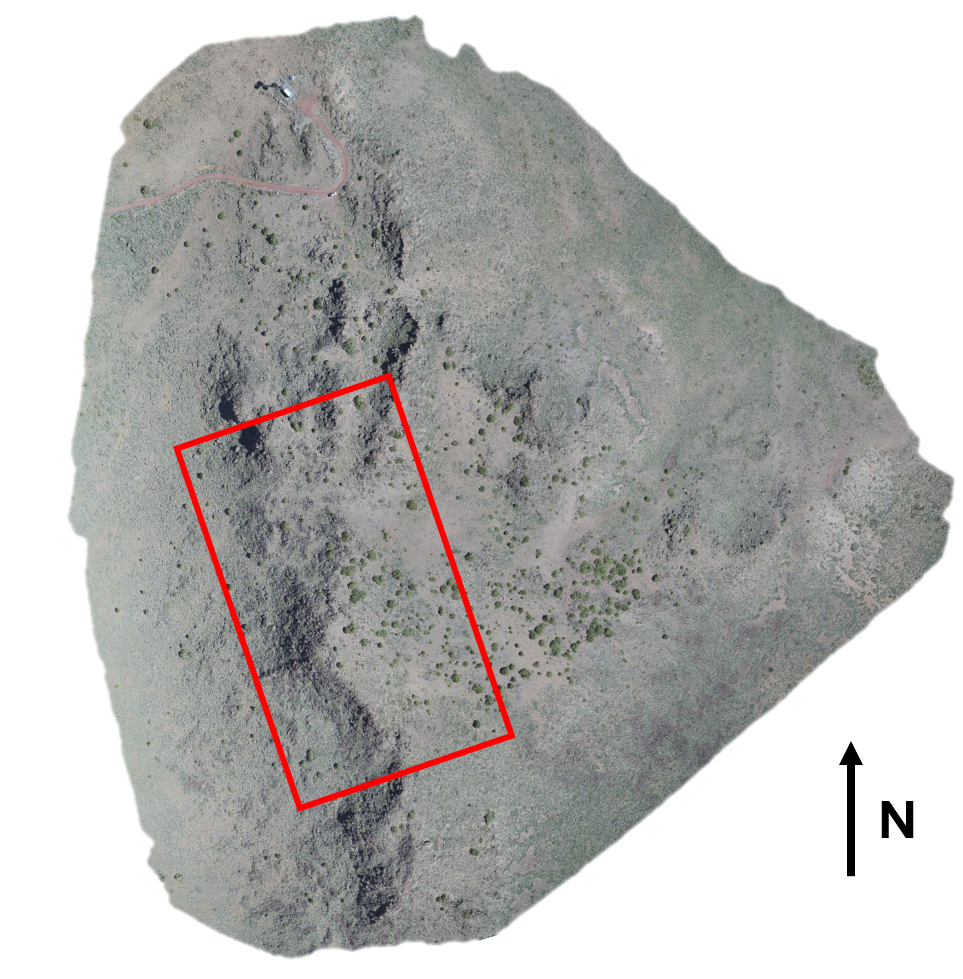
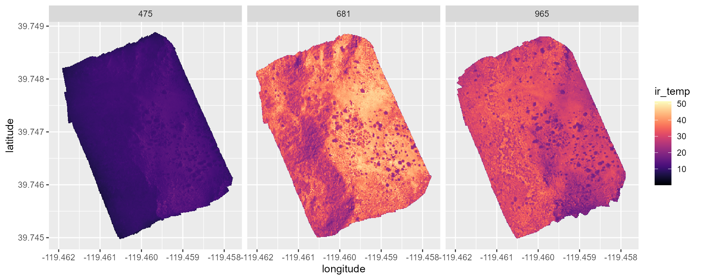
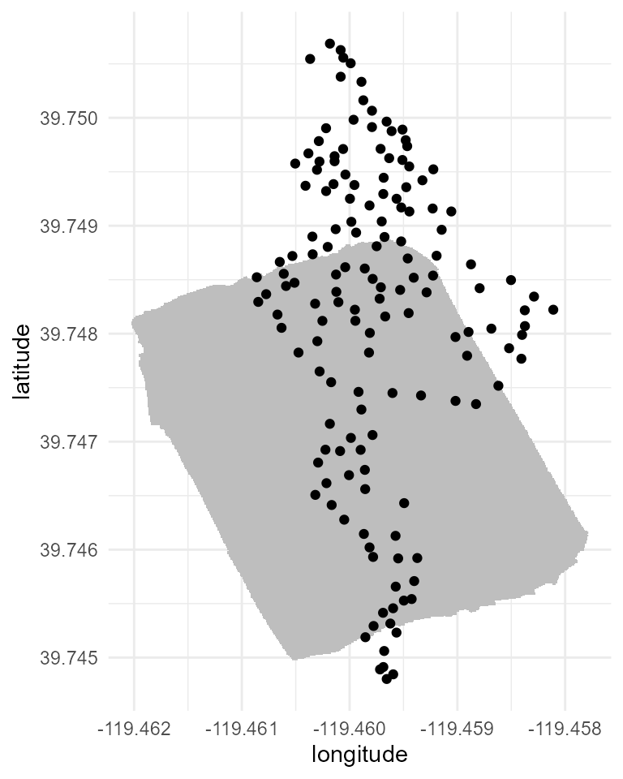
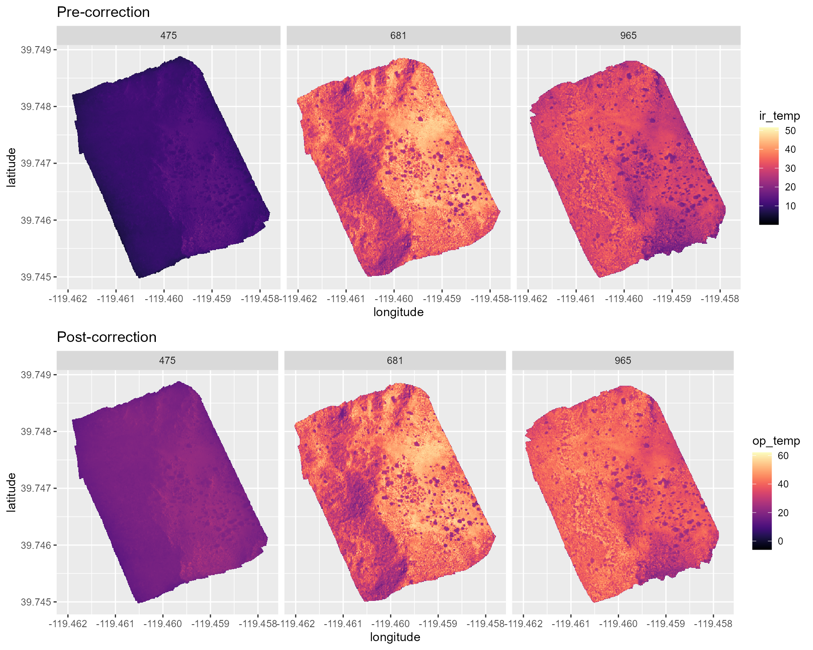
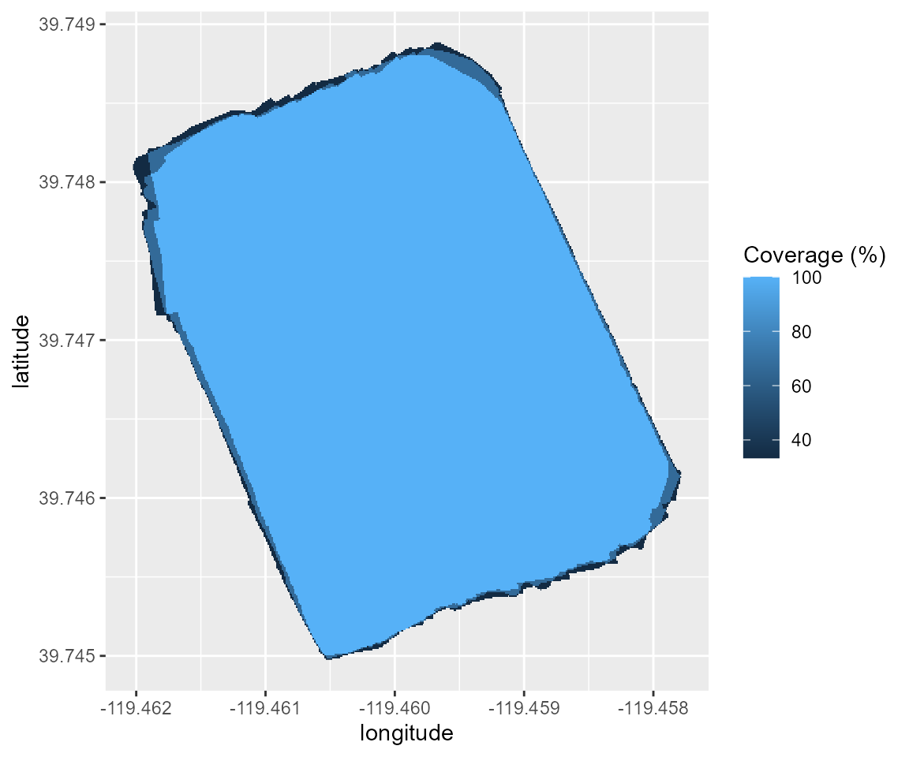
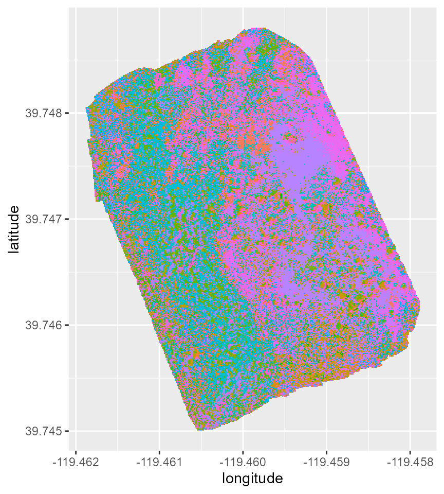

Case study: Thermoregulation in high elevation lizards.
case_study.RmdOverview
In this vignette we illustrate a case study to serve as an example on
how to use the tools provided by the throne package. In
this example we will be looking at a population of western fence lizards
(Sceloporus occidentalis) living at ~ 2400 m above sea level in
the Great Basin Desert of Northern Nevada.


This population underwent mark-recapture during the summer of 2022.
All individuals were uniquely identified via toe-clipping and, upon each
capture the we recorded the location of each individual (i.e.,
latitude and longitude) using a Trimble Geo7x
GPS with an accuracy of ~0.5 \(m^2\),
and the time (i.e., year, day of the year or
doy and minute of the day or mod).
Additionally, for most lizards we recorded a body temperature
measurement (tb) by inserting a thermocouple probe into the
animal’s cloaca:
lizard_mr## # A tibble: 170 × 8
## id sex year doy mod latitude longitude tb
## <chr> <chr> <int> <dbl> <dbl> <dbl> <dbl> <dbl>
## 1 H001 F 2022 173 583 39.7 -119. 30.5
## 2 H004 M 2022 173 657 39.7 -119. 34.8
## 3 H005 M 2022 173 678 39.7 -119. 33.5
## 4 H006 F 2022 173 702 39.7 -119. 35.3
## 5 H007 M 2022 173 723 39.7 -119. 33.2
## 6 H008 F 2022 173 724 39.7 -119. 32.2
## 7 H009 M 2022 173 753 39.7 -119. 33.6
## 8 H010 F 2022 173 795 39.7 -119. 31.9
## 9 H014 M 2022 173 922 39.7 -119. NA
## 10 H015 M 2022 173 941 39.7 -119. NA
## # ℹ 160 more rowsWith this data our goal is to:
Quantify the distribution of temperatures experienced by these lizards.
Assess how the relationship between their
tband the temperatures they have available to gauge their ability to behaviorally thermoregulate in this environment.
To achieve these goals we can use the methodology developed in the
throne package which we detail below:
OTM deployement
We deployed a total of 128 operative temperature models (OTMs)
randomly through the site that recorded 1 operative
temperature measurement per hour.

Flights
We flew 3 flights over an ~ 95000 \(m^2\) area overlapping with the areas that
we surveyed as part of the lizard mark-recapture. Two flightswere
conducted on the same day (08/04/2022) at
07:55 and 11:21 and a third flight was
conducted 2 days later at 16:05
c_flights_metadata## flight_id date time_start time_end
## 1 c_flight_1 8/6/2022 16:05 16:28
## 2 c_flight_2 8/4/2022 11:21 11:45
## 3 c_flight_3 8/4/2022 7:55 8:19
R workflow
Reading and processing flights data
Following the R workflow specified in the
throne package, the first step is to read and process the
flights data. An important part of this step is to specify the
digits argument which will set the spatial resolution of
each of the tiles in our final thermal landscape prediction. For this
example, we choose to set digits = 5 as, at this latitude,
this will lead to a tile area of ~ 0.95 \(m^2\), which is representative of a micro
habitat a lizard might be experiencing. We read and process the flights
data using the rnp_flights_data function as follows:
# set files path
flight_files_path <- "x" # This would be a folder within the user's computer, not specified here
# read the metadata file
c_flights_metadata <- read.csv("data/case_flight_data.csv")
# read and process flights data
c_flights_data <- rnp_flights_data(path = flight_files_path, metadata = c_flights_metadata, digits = 5)The outcome will be a flights data tibble storing all of
surface temperature (ir_temp) measurements collected across
all flights:
c_flights_data## # A tibble: 304,368 × 7
## longitude latitude ir_temp year doy mod_start mod_end
## <dbl> <dbl> <dbl> <dbl> <dbl> <dbl> <dbl>
## 1 -119. 39.7 17.8 2022 218 965 988
## 2 -119. 39.7 18.2 2022 218 965 988
## 3 -119. 39.7 13.5 2022 218 965 988
## 4 -119. 39.7 26.8 2022 218 965 988
## 5 -119. 39.7 24.5 2022 218 965 988
## 6 -119. 39.7 18.0 2022 218 965 988
## 7 -119. 39.7 27.3 2022 218 965 988
## 8 -119. 39.7 27.2 2022 218 965 988
## 9 -119. 39.7 22.1 2022 218 965 988
## 10 -119. 39.7 22.7 2022 218 965 988
## # ℹ 304,358 more rowsWe can plot this data using ggplot tools to already get
a sense of the thermal characteristics of our site:
c_flights_data %>%
ggplot(aes(x = longitude, y = latitude, fill = ir_temp)) +
geom_raster() +
scale_fill_viridis(option = "magma") +
facet_grid(cols = vars(mod_start))
Reading and processing OTMs data
The next step would be to read and process the data collected via the
OTMs. We can do this by using the
rnp_otms_data function from the throne
package. Before we do that, we should check the structure of our raw OTM
.csv files. In this example they look like this:
## raw_date_time temp otm
## 1 6/13/2022 14:18 27.0 H22
## 2 6/13/2022 15:18 18.0 H22
## 3 6/13/2022 16:18 21.5 H22
## 4 6/13/2022 17:18 16.0 H22
## 5 6/13/2022 18:18 10.0 H22
## 6 6/13/2022 19:18 8.0 H22By taking a look at this (and other files) we can tell that there is
no need to skip any rows when reading them as .csv which
means that we can set the rows_skip argument of
rnp_otms_data to 1, such that it can start
reading from the first row. We can also see that the column
raw_data_time contains information on both the date and the
time of each measurement and thus, that we should set the
date_col argument to 1. We could also specify
time_col = 1, but that’s not necessary as if no
time_col is specified, rnp_flights_data will
assume that date_col = time_col. Lastly, we can see from
this file that the operative temperature measurements are stored in the
third column and that, as a result, we should set the
op_temp_col argument to 2. With this in mind,
we can read and process the OTM data as follows:
# speficy the path to where the OTM .csv files are stored
c_otms_path <- "data/case_otm_data"
# specify the OTM metadata file
c_otms_metadata <- read.csv("data/case_otm_metadata.csv")
# read and process OTMs data
c_otms_data <- rnp_otms_data(path = c_otms_path, metadata = c_otms_metadata, rows_skip = 1, date_col = 1, op_temp_col = 2)The outcome will be an otm data tibble containing all
the observations made by all OTMs:
as_tibble(c_otms_data)## # A tibble: 262,016 × 7
## otm_id year doy mod op_temp latitude longitude
## <chr> <dbl> <dbl> <dbl> <dbl> <dbl> <dbl>
## 1 H1 2022 164 910 15 39.7 -119.
## 2 H1 2022 164 970 17 39.7 -119.
## 3 H1 2022 164 1030 16 39.7 -119.
## 4 H1 2022 164 1090 15.5 39.7 -119.
## 5 H1 2022 164 1150 13 39.7 -119.
## 6 H1 2022 164 1210 9 39.7 -119.
## 7 H1 2022 164 1270 4 39.7 -119.
## 8 H1 2022 164 1330 2.5 39.7 -119.
## 9 H1 2022 164 1390 2 39.7 -119.
## 10 H1 2022 165 10 1 39.7 -119.
## # ℹ 262,006 more rowsAs seen below, not all OTMs fell within the area we covered in our flights. This is because here we are only presenting a subset of all flights collected and lizard observations. Nonetheless, the fact that only the thermal dynamics of a given OTM (not its position) is the only characteristic we use to predict thermal landscapes, we can use OTMs that fell outside of our area of interest as long as they were recording at the same time the flights took place:

Building OTM spline models
Having read the OTMs data, the next step is to define cubic
splines models to describe the thermal dynamics of each OTM on
each doy during its deployment. To do this, we can use the
gen_otm_splines function of the throne
package. For this step, a crucial user input is the knot_p
parameter which will determine the “wiggliness” of the spline model. Choosing
th appropriate knot_p value is dependent on the
recording frequency at which we set our OTMs and the thermal properties
of the organism of interest itself. Based on the thermal properties of
our organism of interest (Sceloporus occidentalis), we would
ideally a spline model with 1 knot for every 15 minutes but our OTMs
recorded at afrequency of 1 observation / hour. At this frequency, we
want to preserve as much information on the thermal fluctuations of the
OTM as possible which is why setting knot_p = 1 works fine.
To obtain the spline models, we can simply run:
c_otms_splines <- gen_otm_splines(otm_data = c_otms_data, knot_p = 1)Which returns a nested tibble with all
otm_id & doy specific models (in the
column spline):
c_otms_splines## # A tibble: 11,008 × 6
## otm_id year doy latitude longitude spline
## <chr> <dbl> <dbl> <dbl> <dbl> <list>
## 1 H1 2022 164 39.7 -119. <smth.spl>
## 2 H1 2022 165 39.7 -119. <smth.spl>
## 3 H1 2022 166 39.7 -119. <smth.spl>
## 4 H1 2022 167 39.7 -119. <smth.spl>
## 5 H1 2022 168 39.7 -119. <smth.spl>
## 6 H1 2022 169 39.7 -119. <smth.spl>
## 7 H1 2022 170 39.7 -119. <smth.spl>
## 8 H1 2022 171 39.7 -119. <smth.spl>
## 9 H1 2022 172 39.7 -119. <smth.spl>
## 10 H1 2022 173 39.7 -119. <smth.spl>
## # ℹ 10,998 more rowsCorrecting flights data
Due to [the inherent differences in the physical properties of the
surface temperature measurements from an IR camera and the operative
temperature measurements from an OTM] (https://ggcostoya.github.io/throne/articles/correcting_flight_data.html#overview),
the next step in the throne package workflow is to correct
the data obtained via flights using OTM flights data. To achieve this,
we will use the correct_flighs_data function as
follows:
c_flights_data_corr <- correct_flights_data(flights-data = c_flights_data, otm_splines = c_otms_splines)We can visualize below the effects of the correction process
(Post-correction) with respect to the data from the
original flights (Pre-correction).
pre_corr <- c_flights_data %>%
ggplot(aes(x = longitude, y = latitude, fill = ir_temp)) +
geom_raster() +
scale_fill_viridis(option = "magma") +
facet_grid(cols = vars(mod_start)) +
ggtitle("Pre-correction")
post_corr <- c_flights_data_corr %>%
ggplot(aes(x = longitude, y = latitude, fill = op_temp)) +
geom_raster() +
scale_fill_viridis(option = "magma") +
facet_grid(cols = vars(mod_start)) +
ggtitle("Post-correction")
grid.arrange(pre_corr, post_corr, nrow = 2, ncol = 1)
Matching tiles to OTM dynamics
The last step before being able to predict thermal landscapes is to
match the thermal dynamics of each of the tiles within our corrected
flights data to the dynamics of a given OTM. To achieve this, we can use
the match_data function from the throne
package. To use this function, two user-specific inputs are needed:
coverage_per and error_max. The first one
determines the degree of coverage across multiple flights that a tile
needs to have in order to be considered in the matching process. As seen
below, our flights had a particularly good overlap:
c_flights_data_corr %>%
group_by(latitude, longitude) %>%
summarise(coverage_per = 100*(n()/3)) %>%
ggplot(aes(x = longitude, y = latitude)) +
geom_raster(aes(fill = coverage_per)) +
guides(fill = guide_colorbar(title = "Coverage (%)"))
In our case, we can set coverage_per = 1 to ensure that
only areas covered across all flights are considered although, for a
greater number of flights we would recommend setting
coverage_per = 0.9. The second input
(error_max) determines the maximum average absolute error
between a tile and OTM dynamics that should be specified as a threshold
for the matching. If the average absolute difference between a tile’s
thermal dynamics and the OTM that best describes it is >
error_max, that tile is not matched to any OTM and thus
should not be considered. In this case, we will follow our own
specifications and set error_max = 5. Now, we can run the
match_data function as follows:
c_matches <- match_data(flights_data = c_flights_data_corr, otm_splines = c_otms_splines, coverage_per = 1, error_max = 5)The result will be a matches tibble with the OTM that
best describes the dynamics of each tile in the site. In the figure
below, each tile is colored according to the otm_id that
best represents it’s thermal dynamics.
c_matches## # A tibble: 98,363 × 4
## latitude longitude otm_id error
## <dbl> <dbl> <chr> <dbl>
## 1 39.7 -119. NA NA
## 2 39.7 -119. H121 0.842
## 3 39.7 -119. H6 2.17
## 4 39.7 -119. H16 3.06
## 5 39.7 -119. H4 1.39
## 6 39.7 -119. H56 2.44
## 7 39.7 -119. H78 2.15
## 8 39.7 -119. H132 2.89
## 9 39.7 -119. H36 1.86
## 10 39.7 -119. H6 1.32
## # ℹ 98,353 more rows